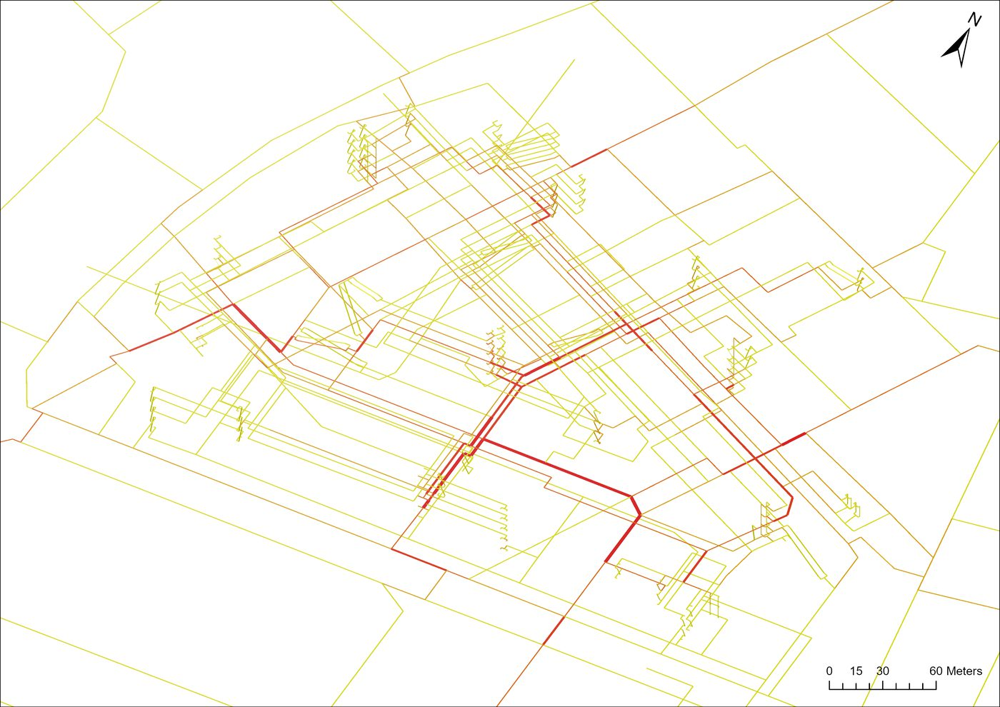
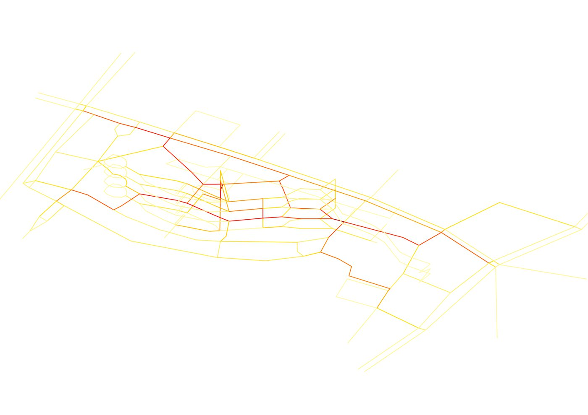
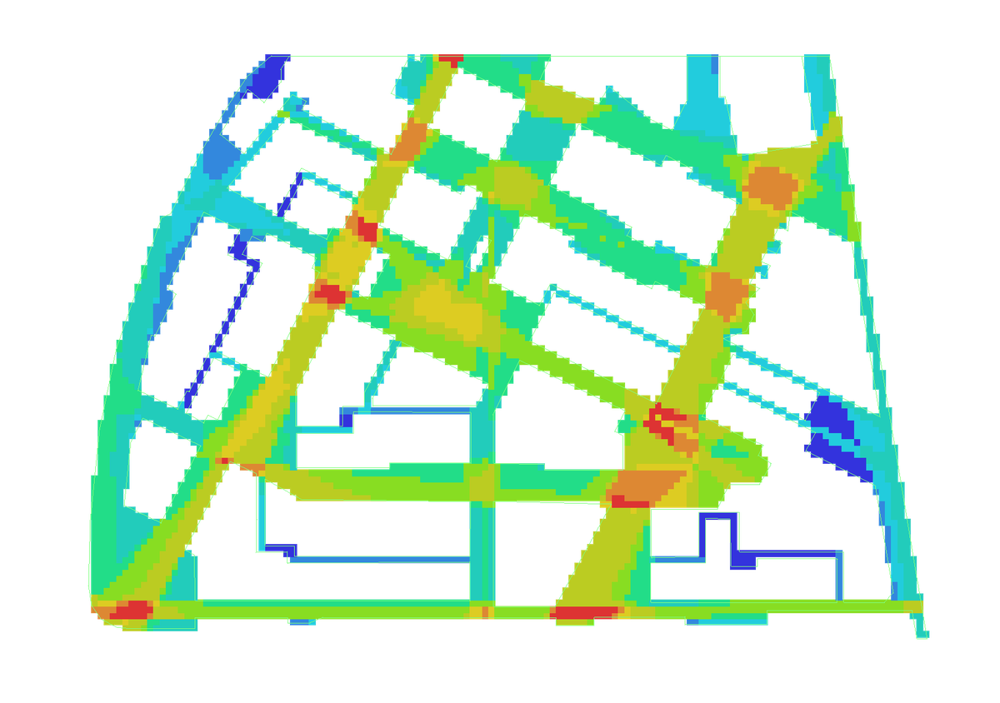
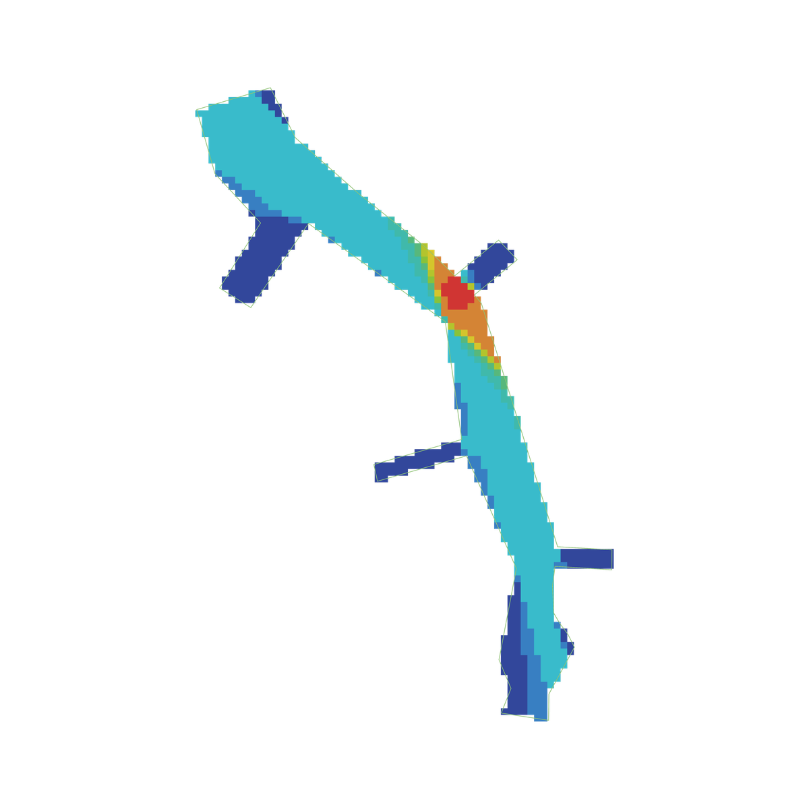

千店一面
我们调研了上海 80 家购物中心。超过六成，在去掉招牌之后你认不出是哪一家。这份研究把「千店一面」的直觉，拆成品牌、业态、楼层三个可以量化的维度。
品牌池正在向同一套底版收敛
先看店招上的连锁品牌。少数头部连锁几乎渗透全市，把任意两家商场的重合度都拉高了。这是同质化三层框架的第一层。
业态构成：餐饮与服饰撑起同一张底版
把每家商场的品牌按 14 类业态归并，再各自归一到百分比。80 条并排的色带，几乎是同一种红蓝节奏。
品牌层的趋同还能用「连锁渗透」解释，业态层的趋同则更结构性。当餐饮与服饰鞋包两类长期占去半壁，剩下的十二类只能在边角上腾挪，商场之间的配比差异被压到很窄的区间。
同质化最重的，不是高端
把品牌池与业态构成两层合成一个复合同质化指数 H = (Si + Sf)/2，对 80 家排个序，结论有点反直觉。
区位整合度：谁站在网络的中心
把 80 家商场放回上海的真实地图。先看商场之间的区位整合度，再叠上整座城市路网自身的空间句法（space syntax）整合度，两层都指向同一个中心。
同质化不只发生在店铺清单里，也写在区位上。中心城区的商场互相离得近、彼此可替代，外环与新城的商场则被距离稀释，这是地图上每个点的「区位整合度」。在它之外，路网本身也有整合度高低之分。我们直接从 OpenStreetMap 取来覆盖全市域的五万四千余条路段，按空间句法的角度接近度算了一遍：越是少转几次弯就能通达全城的路段，整合度越高。这一层可以在地图左上角开关。姚另用 depthmapX 跑了一版轴线整合度做交叉验证，标出的高整合核心与此一致。
越靠近中心，并不越同质
把空间这一侧的整合度，与品牌、业态、复合三个同质化指数放在一起做相关，会得到一个与直觉相反的结果：城市中心既没有更同质，空间也不是同质化的直接原因。
如果只凭空间直觉，内环商场彼此挨得近、可替代性强，似乎最该千店一面。可是把 80 家按所在圈层分组后，内环内的复合同质化 H 反而最低（0.593），越往外越高，到外环与中环之间升到 0.809，再到郊区新城略有回落。空间中心性与品牌、复合两个维度的同质化，方向是相反的。
这条反差不能直接读成「内环导致低同质」。内环本就聚集了更多高端与中高端项目，圈层和消费定位高度缠在一起。更稳妥的说法是，单看圈层并不能解释同质化，它要和定位、竞争环境、服务半径放在一起才说得通。
把关系量化，区位整合度与品牌同质化 MHIi 的秩相关（Spearman）为 −0.407，与复合 H 为 −0.375，两项都达到统计显著；与业态同质化 MHIf 之间则几乎看不出关系。换一个空间口径，路网整合度反过来与业态同质化 MHIf 的关系更清楚（−0.297 与 −0.305），却与品牌同质化无关。品牌与业态这两类同质化，像是被两种不同的空间机制各自牵动着。
品牌池更贴近商业等级、招商资源与品牌门槛，业态组合则更贴近服务半径与路网可达的日常客群。下面这张散点可以自选横纵轴，逐对验证这层关系。
综合起来，空间并不直接决定同质化，更像是沿着一条间接的链条起作用：
这条链条只是数据给出的提示，还不构成因果证明。区位整合度本身又与商场两两间的平均距离近乎互为反函数，业态同质化 MHIf 又高度左偏、可解释的方差有限，这些都让全市尺度的解释力到此为止。也正因为如此，下一步要走进单体商场内部，看动线、节点与垂直组织，如何把「看起来很像的两家」在体感上重新拉开。
楼层模板：最后一处还留着差异的地方
业态沿楼层的铺排节奏，是品牌与构成都收敛之后，仍能分辨彼此的一层。下面以前滩太古里为锚点，并排兴业太古汇（入选）与环贸 iapm（次位候选）的垂直剖面。
同样以餐饮见长，两家的处理并不一样。前滩把餐饮摊在地面与顶层的开放街区，兴业则把高区让给写字楼配套的轻食。这种差别无法从品牌名单里读出，只有把业态投到楼层上才显形。我们用 MHIsf（空间功能同质化）把它量化：把 14 类业态压进地下、地面、中间、顶四层，展开成 4×14=56 维向量，再对两家做余弦相似。功能越是落在相近的层级，两家就越像。
两座太古：被算法选中的一对
前滩太古里的「最像的另一家」是谁？就用上一章的空间功能相似度 MHIsf，在 79 个对象里逐一比对，胜出的是兴业太古汇。
0.8385 是怎么算出来的：把每家商场的品牌按所属业态（14 类）与所在楼层层级（地下层、地面层、中间层、顶层共 4 层）落进 4×14 = 56 个格子，每家得到一条 56 维计数向量。前滩与兴业各自得到一条这样的向量，再做余弦相似度，cos(v前滩, v兴业) = 0.8385。它衡量的不是「业态种类是否相同」，而是相同的业态有没有落在相同的楼层。两家共享同一份高端品牌池，又把品牌摆在彼此相近的楼层位置，余弦值因此偏高。
挑出这一对之后，真正的差异要回到楼层剖面去找。前滩把餐饮铺在开放街区的地面与顶层，兴业则把高区让给写字楼配套。同一份品牌名单，落到不同的楼层模板上，逛起来的体感才被重新拉开。这也是阶段二要继续追问的题目。
走进去：两种相反的空间原型
城市尺度说这是最像的一对，复合空间功能相似度 MHIsf=0.84。可是把两家的内部步行网络用 sDNA（spatial Design Network Analysis，空间设计网络分析）各跑一遍，组织逻辑几乎相反。
前滩太古里是开放街区式的复合网络，穿行度最高的廊道分散在石区中轴与木区连廊的交汇处，跨越多个方向节点，没有单一主导轴。兴业太古汇则是典型的封闭中庭型集中结构：前 10% 的高穿行廊道里有 97% 集中在地面层一层，地面层 L1 的穿行度均值是 L2 的 2.4 倍、地下一层的 2.5 倍，地下二层几乎退出竞争。


最像的一对，在建筑尺度上其实分道扬镳。前滩把人流摊开成多中心的街区，兴业把人流收束到一条地面主轴。空间组织的这层差异，已经为后面体验的分叉埋下伏笔。
看得见，还要走得到
把「被经过」（sDNA 穿行度）和「被看见」（VGA，visibility graph analysis，视域分析）两张高值图叠在一起，双高的铺位才是真正的黄金位置。两家在这件事上差距很大。
前滩太古里的双高重叠率达到 35%，有 7 个品牌同时占据「被看见」与「被经过」的位置，例如 IWC 万国、Van Cleef & Arpels、星巴克向绿工坊。兴业太古汇的双高重叠率只有 8%，视域优势与穿行优势被分配到不同铺位，真正意义上的黄金铺位很少。


VGA 的差异和 sDNA 同向。前滩是多中心、既能被看见又能被走到的开放结构，兴业的视域开阔处（中庭与香水美妆区）与穿行主轴并不重合。看得见和走得到，在兴业被拆成了两件事。
体验的分叉：ΔSEI = 0.45
建筑尺度的差异，到了人身上变成可测量的体验差。田野把空间体验拆成 9 个维度逐项打分（SEI，spatial experience index，空间体验指数），前滩综合得分 3.89，兴业 3.44，相差 0.45。
差距最大的两维是动线开放度（前滩 5、兴业 2）与公共空间功能（前滩 5、兴业 2）。前滩用开放街区为非消费性的停留和视觉多元留出余地，兴业的封闭中庭则把空间主要让给品牌展示。把田野的现场记录并排，差别更具体：
田野的细节和雷达吻合。前滩室内几乎没有免费座位和绿化，公共性主要由几个露天中庭的天光与顶层跑道承担；兴业有整场天幕、采光优异，室内却只有一处公共座位，中庭以品牌展示为主。
品牌趋同，不等于体验趋同
三个尺度连起来看，结论就清楚了。
品牌资本的同质化是结构性趋势，80 家商场的品牌池、业态与楼层都在收敛。但前滩太古里用开放街区、木石双区的材质系统和跑者楼梯这些空间手段，在体验层制造了可测量的差异。这说明，空间设计是品牌同质化与消费体验之间的一个独立缓冲变量。
对城市设计的启示也随之而来。当业态配置的趋同已经难以逆转，设计师真正有效的介入在空间组织层，而不是业态层。能不能在商业逻辑允许的范围内，用开放动线、公共停留和材质差异，为真实的场所性留出物质条件，是衡量高密度商业空间设计品质的核心标准之一。
千店可以一面。但走进去，未必一面。
数据：80 家上海购物中心实地与官网调研，前滩太古里 / 兴业太古汇内部三维步行网络建模 ｜ 方法：Whittaker α/β/γ · 余弦相似（MHI_f / MHI_sf）· OSM 路网角度整合度 · Spearman 相关 · sDNA 三维步行网络 · VGA 视域分析 · SEI 田野量表 ｜ 2026 春季学期